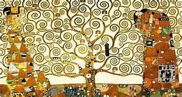
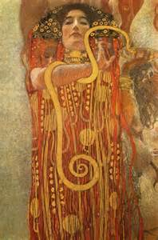

Gustav Klimt nacque il 14 luglio 1862 a Baumgarten, quartiere di Vienna, secondo di sette fratelli (tre femmine e quattro maschi):[1] il padre Ernst Klimt (1834-1892), nativo della Boemia, era un orafo,[2] mentre la madre, Anna Finster (1836-1915), era una donna colta e versata nella musica lirica. Tutti i figli maschi della famiglia Klimt riveleranno in futuro una forte inclinazione per l'arte: i fratelli minori di Gustav, Ernst e Georg, diverranno anch'essi pittori.
Frequentò per otto anni la scuola primaria nel settimo distretto comunale di Vienna[3] e successivamente nel 1876, malgrado le pressanti ristrettezze economiche, il quattordicenne Gustav venne ammesso a frequentare la scuola d'arte e mestieri dell'Austria (Kunstgewerbeschule), dove studiò arte applicata fino al 1883, cominciando a informare personali orientamenti di gusto e imparando a padroneggiare diverse tecniche artistiche, dal mosaico alla ceramica, nel rispetto dei canoni accademici e della storia dell'arte del passato; fondamentale fu qui l'influenza esercitata da Ferdinand Laufberger e Hans Makart, sui quali condusse i primi studi. I frutti di tanto arricchimento non poterono tardare: già tre anni dopo, al giovine Gustav venne commissionata la decorazione del cortile del Kunsthistorisches Museum, su progetto dello stesso Laufberger.[4] Da questo momento in poi, gli incarichi iniziarono a moltiplicarsi: nel 1880 dipinse le quattro allegorie del Palazzo Sturany a Vienna e il soffitto della Kurhaus di Karlsbad, mentre tra il 1886 e il 1888 si dedicò, con il fratello e l'amico, alla decorazione del Burgtheater, in una serie di pannelli raffiguranti teatri dell'antichità o del mondo contemporaneo. I tre iniziarono a guadagnare ben presto notorietà negli ambienti artistici, e le commissioni dei primi ritratti garantiranno loro discreto successo e tranquillità economica.

A testimonianza del suo riconoscimento artistico, nel 1888 Klimt ricevette una benemerenza ufficiale dall'imperatore Francesco Giuseppe, e le università di Monaco e Vienna lo nominarono membro onorario. Nel 1892, a pochi mesi dalla morte del padre, anche il fratello Ernst morì improvvisamente: a questi lutti, che lasciarono un segno profondo anche nella sua produzione artistica, seguirono ben sei anni d'inattività. Nello stesso periodo avvenne l'incontro con Emilie Flöge che, pur essendo a conoscenza delle relazioni che il pittore intratteneva con altre donne (negli anni novanta del XIX secolo Klimt sarà il padre riconosciuto di almeno quattordici figli),[5] gli sarà compagna fino alla morte.
Nel quadro intitolato Amore del 1895 si presentano già alcune caratteristiche di forma e contenuti che accompagneranno Klimt per tutta la sua carriera.
Sempre più in contrasto con i rigidi canoni accademici, nel 1897 Klimt fondò insieme ad altri diciannove artisti la Wiener Sezession (secessione viennese), attuando anche il progetto di un periodico-manifesto del gruppo, Ver Sacrum (Primavera sacra), del quale verranno pubblicati 96 numeri, fino al 1903. Gli artisti della Secessione aspiravano, oltre a portare l'arte al di fuori dei confini della tradizione accademica, in un florilegio di arti plastiche, design e architettura, anche a una rinascita delle arti e dei mestieri: non vi era uno stile prediletto, sicché sotto l'egida di questo gruppo si riunirono i simbolisti, i naturalisti e i modernisti. Il simbolo del Secessionismo era la Pallade Atena, dea greca della saggezza e delle buone cause, che Klimt raffigurerà nel 1898 in uno dei suoi capolavori.
Nel 1894 l'università di Vienna commissionò all'artista la decorazione del soffitto dell'aula magna sul tema illuminista del trionfo della Luce sulle Tenebre, da sviluppare su tre facoltà: Filosofia, Medicina e Giurisprudenza. I lavori furono rimandati per anni e, quando i pannelli vennero presentati, vennero rifiutati e aspramente criticati dai committenti, che avevano immaginato una sobria rappresentazione del progresso della cultura, ma che si ritrovarono un turbinio di corpi sensuali.[7] Noncurante delle critiche, in quel giro d'anni Klimt realizzò anche il Fregio di Beethoven, concepito per la quattordicesima mostra secessionista viennese, allestita dall'aprile al giugno 1902 nei locali del Palazzo della Secessione:[8] questo trionfo di immagini visionarie, enigmatiche, dionisiache che sottintende le angosce e le aspirazioni dell'uomo moderno è una delle migliori testimonianze del genio provocatore di Klimt, che da lì a poco verrà travolto dall'uragano artistico da egli stesso causato.

Nel 1903 Klimt si recò due volte a Ravenna, dove conobbe lo sfarzo dei mosaici bizantini: l'oro musivo, eco dei lavori del padre e del fratello in oreficeria, gli suggerì un nuovo modo di trasfigurare la realtà e modulare le parti piatte e plastiche con passaggi tonali, dall'opaco al brillante. Fu dal connubio tra la ricchezza dei mosaici ravennati e i neonati Wiener Werkstatte (Laboratori Viennesi) ai quali l'artista si avvicinò tornato in patria che nacquero alcuni dei capolavori klimtiani più celebri: Giuditta I (1901), il Ritratto di Adele Bloch-Bauer I (1907) e Il bacio (1907-08) sono tutte opere dove Klimt si presenta convertito all'oro di Bisanzio.
È il dominio dell'oro che contraddistingue le tele del cosiddetto «periodo aureo» o «dorato» di Klimt, che è ormai prossimo ai quarant'anni. Altre peculiarità delle opere del periodo aureo sono la spiccata bidimensionalità del loro stile, che si arricchisce dando maggiore risalto al linearismo e alle campiture, l'impiego di pregnanti simbolismi e la prevalenza di figure femminili, che il pennello di Klimt ricolma di un armonioso erotismo.[9] Al periodo aureo appartengono numerose opere dell'artista viennese: di queste, oltre quelle già citate, degne di nota sono Le Tre Età della Donna (1905), la Danae (1907-1908) e L'Albero della Vita (1905-1909), a sua volta facente parte del più ampio progetto decorativo di palazzo Stoclet.
Il periodo aureo si chiuse nel 1909 con l'esecuzione di Giuditta II, seconda raffigurazione dell'eroina ebrea che liberò la propria città dalla dominazione assira: l'opera, caratterizzata da cromie più scure e forti, darà infatti avvio al cosiddetto «periodo maturo» dell'artista.
